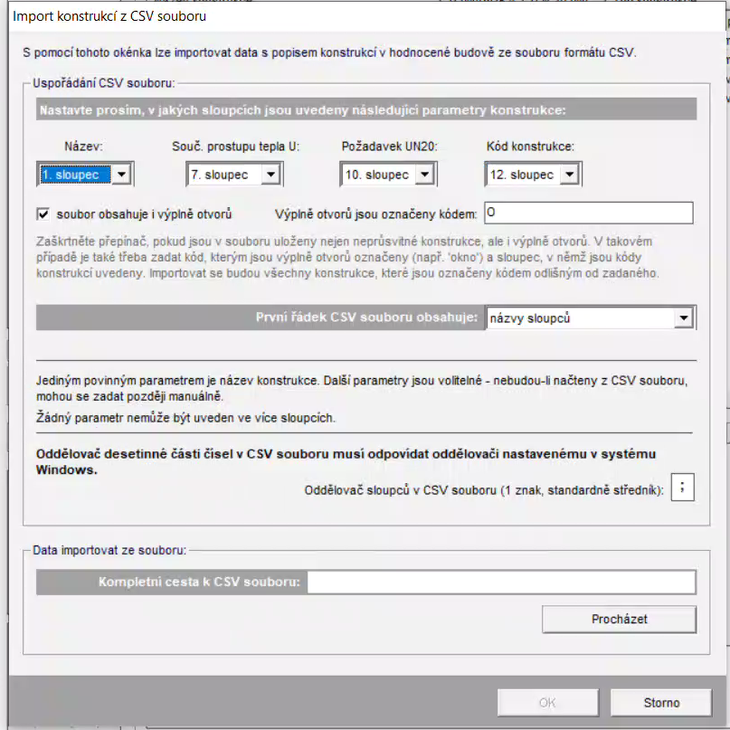
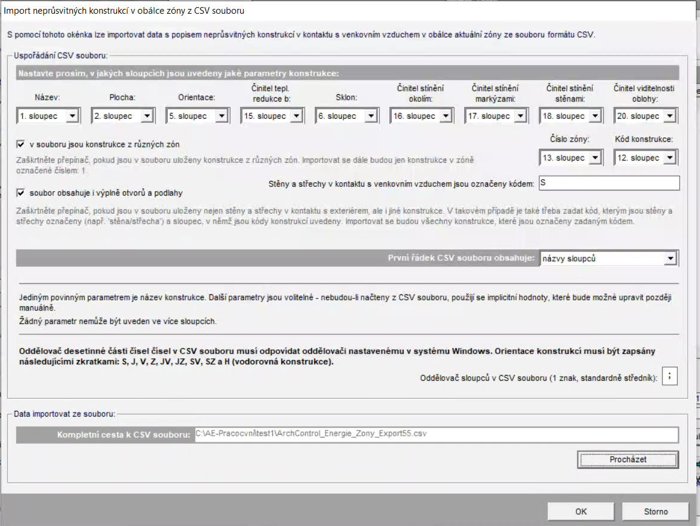
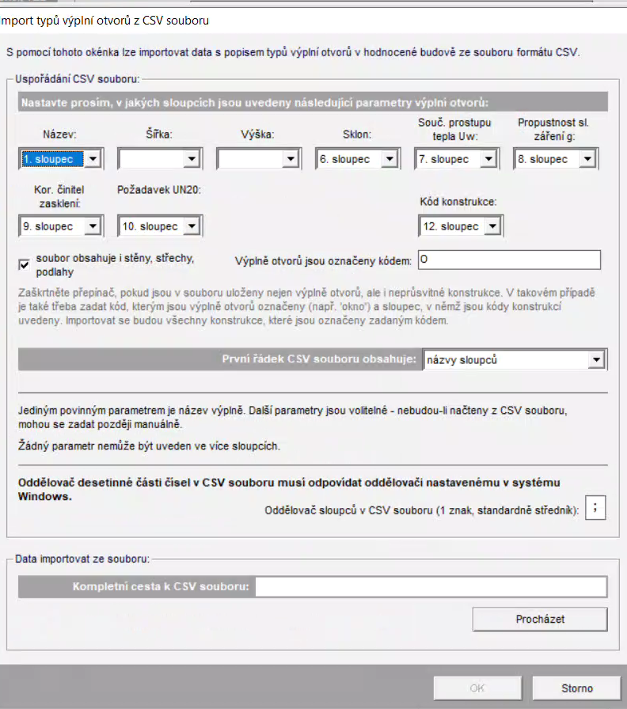
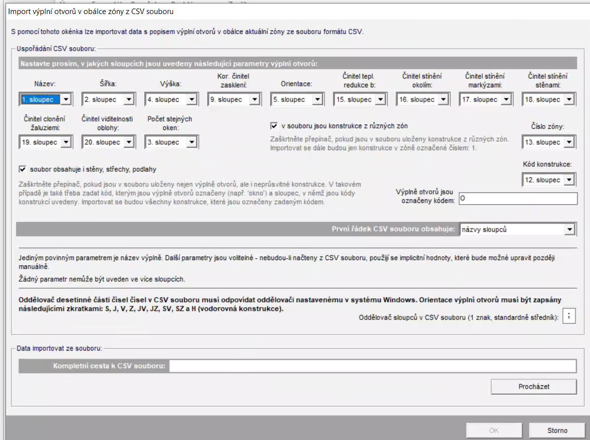

ArchEnergy s.r.o. — nativní plugin v Pythonu.
Panel nabízí Komplexní CSV, Energie po zónách a Renovační pas. Energie má 20 sloupců, oddělovač středník a UTF-8 s BOM. Renovační pas má 16 sloupců, čárku a UTF-8 bez BOM. Podle výslovného rozhodnutí zadavatele zachovává původní Ruby výpočty: místní plochu/normálu a zahrnutí skrytých ploch. Proto se může lišit od hlavní tabulky transformované geometrie.
Úplná shoda všech CSV se současným referenčním exportem dosud není potvrzena. Podrobný aktuální stav a omezení jsou v ARCHENERGY.md.
Následující tabulky a obrázky pocházejí z původního ArchControlu. Popisují historicky ověřené nastavení v Energii, nikoli nové ověření této distribuce. Hodnoty Un odpovídají původnímu pluginu a jeho číselníku.
Obecný formát názvu materiálu:
Například: OD-1-V1-U0.9-G0.5-Okno obývák
Části Var, U a g jsou volitelné. Pro okna (OD, OS, ODN, ODZ) je doporučeno zadat i g.
| Zkratka | Význam | Un |
|---|---|---|
| SO | Stěna vnější (obvodová) | 0,30 |
| SCHS | Střecha šikmá | 0,30 |
| SCH | Střecha plochá | 0,24 |
| STRV | Strop nad venkovním prostorem | 0,24 |
| STR | Strop pod nevytápěným prostorem | 0,30 |
| PDL | Podlaha k zemi | 0,45 |
| PDLE | Podlaha nad průlezným prostorem | 0,30 |
| OD | Okno vnější | 1,50 |
| OS | Okno střešní | 1,50 |
| DO | Dveře vnější | 1,70 |
| DN | Dveře vnitřní | 2,30 |
| SNN | Stěna k podkroví | 0,30 |
| SN | Stěna k nevytápěnému prostoru | 0,95 |
| SNG | Stěna k garáži | 0,30 |
| SNM | Stěna mezi budovami | 1,10 |
| STRT | Strop mezi prostory dT <= 10 C | 1,10 |
| SNT | Stěna mezi prostory dT <= 10 C | 1,30 |
| STR5 | Strop mezi prostory dT <= 5 C | 2,20 |
| SNT5 | Stěna mezi prostory dT <= 5 C | 2,70 |
| ODN | Výplň otvoru k nevytápěnému prostoru | 3,00 |
| ODZ | Výplň otvoru do garáže | 1,70 |
Materiály ve formátu EP-1-zona 1 a CV-1-zona 2 se sčítají v reportu EP/CV. V hlavní tabulce nejsou, ale v paletce materiálů se zobrazují.
| Kód | Význam | Použití |
|---|---|---|
| O | Výplně otvorů | OD, OS, ODN, ODZ, DO, DN |
| S | Stěny a střechy | obvodové stěny a střechy vůči exteriéru |
| P | Podlahy | PDL, PDLE |
| N | Konstrukce k nevytápěným prostorům | SN, SNN, SNG, SNM, STR, STRT, SNT, STR5, SNT5 |

Tento import slouží pro typy konstrukcí mimo obálku zóny.
| Pole v Energii | Sloupec CSV |
|---|---|
| Název | 1. sloupec |
| Souč. prostupu tepla U | 7. sloupec |
| Požadavek UN20 | 10. sloupec |
| Kód konstrukce | 12. sloupec |

Prakticky ověřené mapování pro import konstrukcí v obálce zóny.
| Pole v Energii | Sloupec CSV |
|---|---|
| Název | 1. sloupec |
| Plocha | 2. sloupec |
| Orientace | 5. sloupec |
| Činitel tepl. redukce b | 15. sloupec |
| Sklon | 6. sloupec |
| Činitel stínění okolím | 16. sloupec |
| Činitel stínění markýzami | 17. sloupec |
| Činitel stínění stěnami | 18. sloupec |
| Činitel viditelnosti oblohy | 20. sloupec |
| Číslo zóny | 13. sloupec |
| Kód konstrukce | 12. sloupec |

Import typů výplní se nastavuje jen jednou. Šířka a výška se zde nevybírá.
| Pole v Energii | Sloupec CSV |
|---|---|
| Název | 1. sloupec |
| Šířka | nevybírat |
| Výška | nevybírat |
| Sklon | 6. sloupec |
| Souč. prostupu tepla Uw | 7. sloupec |
| Propustnost sl. záření g | 8. sloupec |
| Kor. činitel zasklení | 9. sloupec |
| Požadavek UN20 | 10. sloupec |
| Kód konstrukce | 12. sloupec |

Mapování pro výplně otvorů v obálce zóny. Tady se šířka a výška také nechávají prázdné.
| Pole v Energii | Sloupec CSV |
|---|---|
| Název | 1. sloupec |
| Šířka | nevybírat |
| Výška | nevybírat |
| Kor. činitel zasklení | 9. sloupec |
| Orientace | 5. sloupec |
| Činitel tepl. redukce b | 15. sloupec |
| Činitel stínění okolím | 16. sloupec |
| Činitel stínění markýzami | 17. sloupec |
| Činitel stínění stěnami | 18. sloupec |
| Činitel clonění žaluziemi | 19. sloupec |
| Činitel viditelnosti oblohy | 20. sloupec |
| Číslo zóny | 13. sloupec |
| Kód konstrukce | 12. sloupec |
EnergySketch · ArchControl · ArchEnergy s.r.o. — úpravy 18. 10. 2026